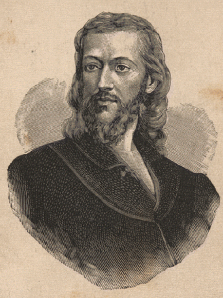
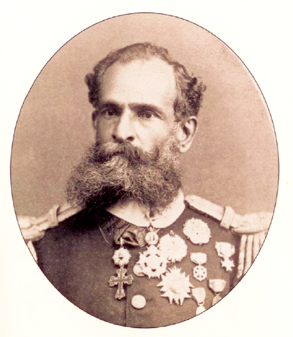
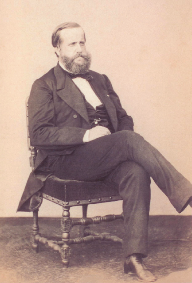

O escritor Machado de Assis (1839-1908), cujo centenário de morte está sendo celebrado no presente ano, retratou na sua
obra de ficção as grandes transformações políticas que aconteceram no Brasil nas últimas décadas do século XIX.
O fragmento do romance Esaú e Jacó, a seguir transcrito, reflete o clima político-social vivido naquela época.
Podia ter sido mais turbulento. Conspiração houve, decerto, mas uma barricada não faria mal. Seja como for, venceu-se a campanha. (...)
Deodoro é uma bela figura. (...)
Enquanto a cabeça de Paulo ia formulando essas idéias, a de Pedro ia pensando o contrário; chamava o movimento um crime.
— Um crime e um disparate, além de ingratidão; o imperador devia ter pegado os principais cabeças e mandá-los executar.
ASSIS, Machado de. Esaú e Jacó. In:_. Obra completa. Rio de Janeiro: Nova Aguilar, 1979. v. 1, cap. LXVII (Fragmento).
-

Disponível em:
http://www.morcegolivre.vet.br/tiradentes_lj.html
-

ERMAKOFF, George. Rio de Janeiro, 1840-
1900: Uma crônica fotográfica. Rio de Janeiro:
G. Ermakoff Casa Editorial, 2006. p.189.
-

ERMAKOFF, George. Rio de Janeiro,
1840-1900: Uma crônica fotográfica.
Rio de Janeiro: G. Ermakoff Casa
Editorial, 2006. p.38.
-

LAGO, Pedro Corrêa do; BANDEIRA, Júlio. Debret e o Brasil:
Obra Completa 1816-1831. Rio de Janeiro: Capivara, 2007. p. 78.
-

LAGO, Pedro Corrêa do; BANDEIRA, Julio. Debret e
o Brasil: Obra Completa 1816-1831. Rio de Janeiro:
Capivara, 2007. p. 93.
Das imagens acima, as figuras referidas no fragmento do romance Esaú e Jacó são
-
I e III
-
I e V
-
II e III
-
II e IV
-
II e V